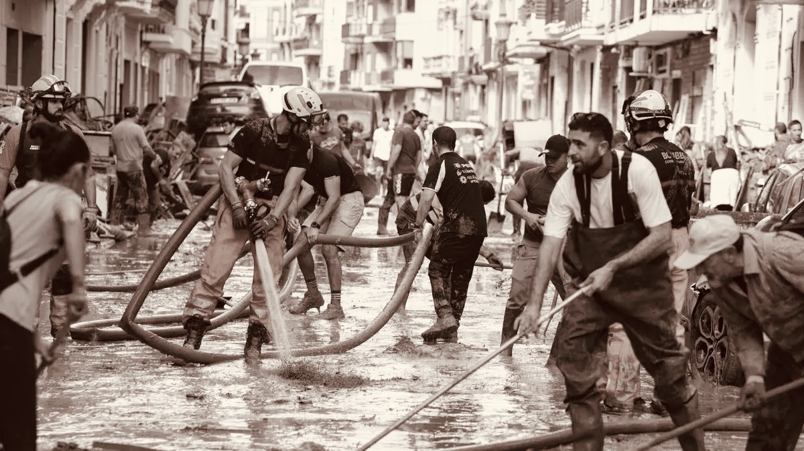

Tu ayuda. Su esperanza.
Nosotros unimos.
Conectamos en tiempo real a quien quiere ayudar con quien lo necesita, y damos a ONG, ayuntamientos y empresas las herramientas para coordinar esa ayuda.
No faltaban voluntarios. Faltaba coordinación.
En una emergencia sobra gente dispuesta a ayudar. Lo que falta es saber quién puede hacer qué, dónde hace falta ahora mismo y quién ya está de camino. Eso es lo que resolvemos.
Quien ayuda ve qué hace falta cerca
Un mapa con las peticiones de su zona, ordenadas por urgencia y distancia, y avisos solo de lo que encaja con lo que sabe hacer.
Quien lo necesita pide en un minuto
Describe qué necesita, marca el punto en el mapa y elige la urgencia. Su teléfono no se publica: solo se comparte cuando acepta a alguien.
Quien coordina reparte y justifica
Publica una operación desde un escenario preparado, ve en directo qué tareas están cubiertas y exporta las horas acreditadas para subvenciones.
Una app pensada para usarse con prisa
Bajo la lluvia, con la pantalla sucia y sin tiempo de leer. Por eso la urgencia se distingue por color, icono y etiqueta a la vez, y lo importante se toca con el pulgar.
- Mapa en tiempo real con avisos de tu zona
- Emparejamiento por habilidades, distancia y disponibilidad
- Mensajería integrada por misión y por organización
- Perfiles distintos para voluntarios y organizaciones
- Registro de horas acreditadas, exportable a CSV
- Funciona con lo guardado cuando se cae la cobertura
Disponible próximamente en App Store y Google Play.


Cuatro formas de usar People for People
Cada perfil ve una herramienta distinta, hecha para lo que necesita hacer.
Voluntarios
Ayuda cuando puedas, en lo que sepas hacer y cerca de donde estés.
Saber más →
ONG
Encuentra a quien encaja con cada tarea y justifica las horas.
Saber más →
Ayuntamientos
Coordina la respuesta ante emergencias con el tejido vecinal.
Saber más →
Empresas
Da forma a tu programa de RSC y mide su impacto real.
Saber más →
La DANA de Valencia
La idea nació durante la DANA de octubre de 2024. La riada dejó a cientos de personas sin nada: familias enteras que lo perdieron todo en unas horas, gente sin recursos básicos esperando una ayuda que muchas veces no llegaba a tiempo.
No fue por falta de voluntad. Sobraban voluntarios. Lo que faltó fue una forma de organizarlos, y esa ausencia costó tiempo que no había.
De ahí salió esta plataforma: conectar voluntarios y organizaciones en tiempo real para que la próxima vez la ayuda llegue donde hace falta, cuando hace falta.


«Adiós, mamá. No pudimos llegar a tiempo. Perdón.»
Una de las pintadas que quedaron en las calles tras la riada.
«En Algemesí hay muchos voluntarios, pero falta coordinación y equipamiento adecuado.»

Objetivos de Desarrollo Sostenible
People for People contribuye a cuatro de los ODS de Naciones Unidas.

ODS 3 · Salud y bienestar
Facilitamos la ayuda en emergencias y apoyamos iniciativas sociales que mejoran el bienestar de las comunidades.

ODS 10 · Reducción de desigualdades
Nos aseguramos de que la ayuda llegue a quien más la necesita, no solo a quien mejor sabe pedirla.

ODS 11 · Ciudades y comunidades sostenibles
Facilitamos la respuesta ante emergencias y la gestión de voluntarios en proyectos comunitarios.

ODS 17 · Alianzas para lograr los objetivos
Conectamos voluntarios, ONG y entidades públicas para maximizar el impacto social.
Gratis para quien no puede pagar
El acceso no puede depender del presupuesto de una entidad. Por eso el coste recae en quien tiene capacidad para asumirlo.
Freemium
Las entidades con menos de 500.000 € de facturación anual usan la plataforma sin coste, sin límite de voluntarios ni de operaciones.
Pago por voluntario
Las organizaciones más grandes pagan en función del uso, lo que sostiene la plataforma y permite que siga siendo gratuita para las pequeñas.
Querer ayudar y necesitar ayuda. Nosotros conectamos.
Somos cuatro personas que vimos lo que pasó en Valencia y decidimos que el problema no era la falta de solidaridad, sino la falta de organización. People for People es nuestro intento de arreglar esa parte.
- Carlos Potenciano
- Daniel Banerjee
- Jakobus Fernández
- Alberto Gómez Kremers

¿Hablamos?
Si coordinas una ONG, trabajas en un ayuntamiento o quieres montar el programa de voluntariado de tu empresa, escríbenos y te enseñamos la plataforma.
peopleforpeopleofficial@gmail.com
Respondemos en un par de días laborables.